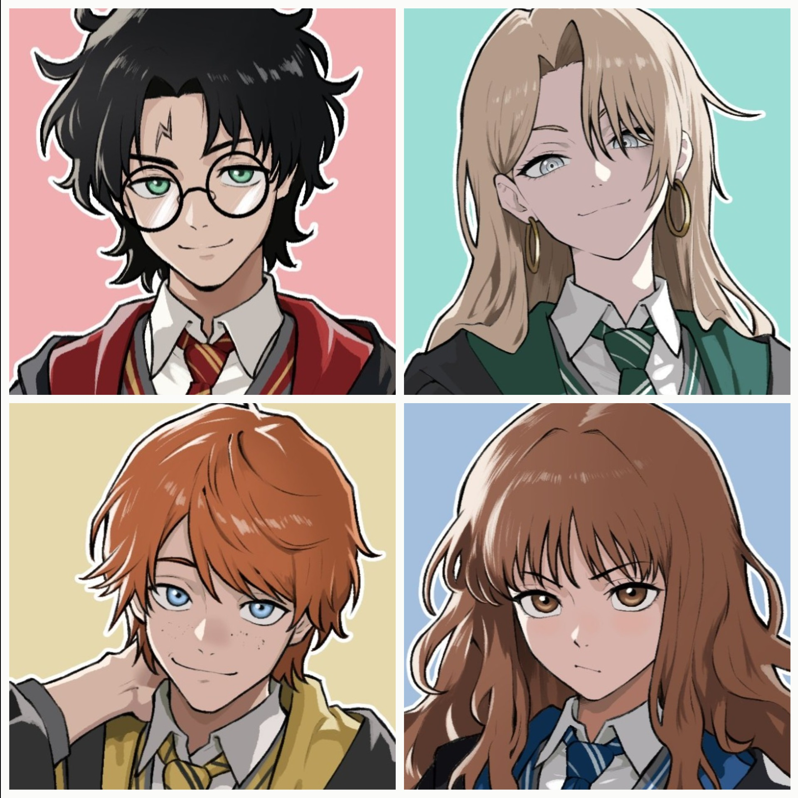
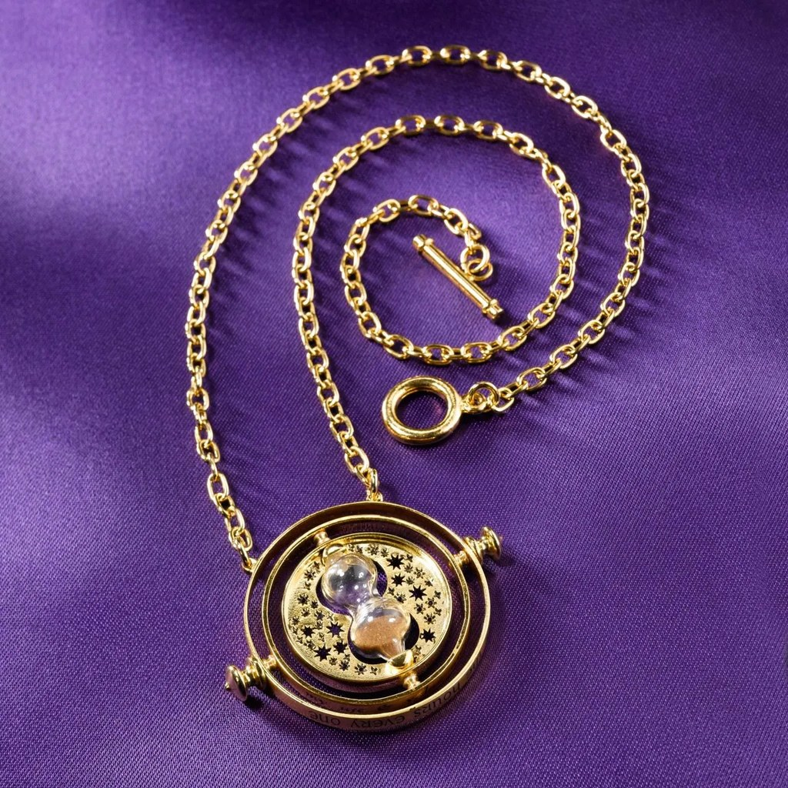
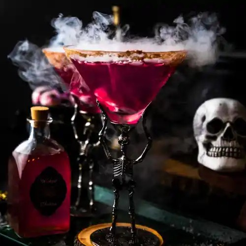
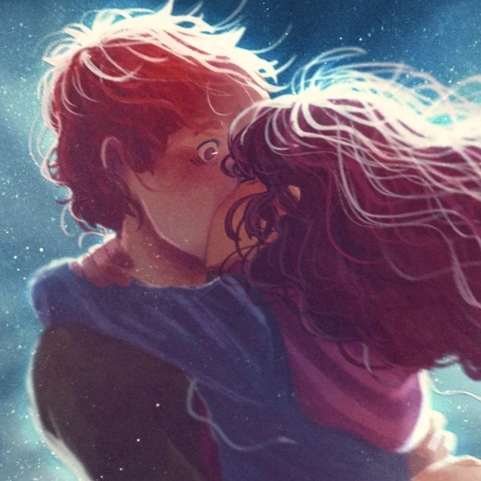
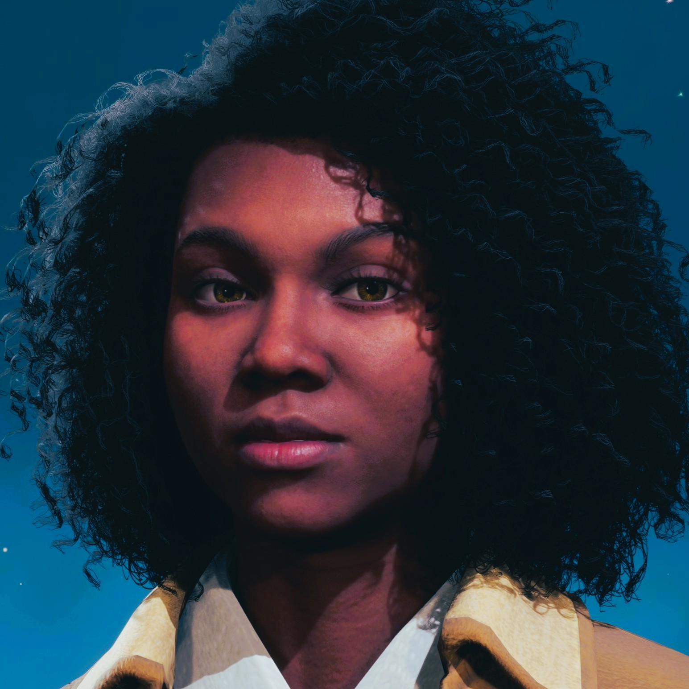

Hermione Jean Granger (born 19 September 1979) is a Muggle-born witch of , the only child of two dentists, and the cleverest witch of her generation at . The Sorting Hat put her in . On her first Halloween a troll, a lie told to a teacher and two apologies made her friends with , a Gryffindor, and , a Hufflepuff. Three houses met in a friendship that, with , would one day take in all four.
Hermione was the one who knew things. She solved the basilisk before it reached her, carried a that answered only when an injustice was being done, founded the Elf Liberation Alliance, and was a Ravenclaw prefect who stood against her own house for . In the war she went with Harry and Ron on the hunt for Voldemort’s Horcruxes. She was tortured at Malfoy Manor, went into Gringotts in Bellatrix Lestrange’s body, won the secret of her own founder’s diadem, and led the Ravenclaws on the walls. In the final duel she found Dracaena bleeding on the stones, the girl who had watched her tortured, and chose to heal her. Her forgiveness came slowly and had to be earned. Her own reckoning came the summer after, when she gave back the memories she had taken from her parents without asking.
Hermione is an ordinary young woman in body. Peak-human fighters like Batman or Captain America would have her on the floor before a spell was finished, and anything at Spider-Man’s speed could close the distance between one incantation and the next. What makes her dangerous is preparation. She casts without speaking, she has usually read about a threat before it arrives, and she brings the right tool for the job. She laid the protective enchantments that hid three fugitives for months, stocked an enchanted handbag with a library and a camp, brewed Polyjuice Potion at thirteen, and used memory and confusion charms on grown wizards. In a crossover battle she is the researcher and the field medic, closer to Batman’s casefiles or a sorcerer’s apprentice than to a brawler. Against city-level threats and beyond (the Hulk, Superman, any Super Saiyan) she has nothing but what she knows, and the sense to Disapparate.
Within her own world her Combat sits just under ’s, level with and . She is a capable battle-wizard, trained in Dumbledore’s Army and tested at the Department of Mysteries and the Battle of Hogwarts, but never the duelist Harry is. Her Intellect is the highest of the four and of her year. Her raw magical output matches the other three. Her Versatility is the widest of the four: charms, healing, wards, memory magic, potions, Transfiguration and Apparition, with no ancient protection and no Parseltongue to set beside them. Her deciding moments in the war were knowledge and healing, not dueling: the Grey Lady’s secret, and the wound she closed so that Dracaena could stand. At 26 she ranks first of the four on paper, which says more about what the scale counts than about who would win a duel.
History
Worlds Apart
Early life (1979–1991)
Hermione was born on 19 September 1979 to a Muggle family. Her parents were dentists, and she was their only child. Nobody in the family had ever had magic, and the odd things that happened around her as a girl were put down to coincidence. The letter from Hogwarts came as a complete surprise. She met it the way she met everything after it: by reading. Before term began she had learned every book on the list by heart and tried every simple spell in them. She went to school sure that if she knew enough, she would belong.
First year (1991–1992)
On the Hogwarts Express she put her head into Harry and Ron’s compartment looking for a lost toad that belonged to Neville Longbottom, and made sure they knew how many spells she already knew., “The Hogwarts Express” She came back just after Dracaena Malfoy had stormed out of the same compartment, and asked what had been going on ().At the Sorting the Hat took nearly a minute over her. Ron groaned in the line when her name was called and was relieved when she went elsewhere. When the Hat called Ravenclaw, she ran to her new table smiling ().
Hogwarts years were small, and most lessons gathered all four houses together, so Hermione sat two rows ahead of Harry and Ron and answered every question., “The Seeker” At the first flying lesson her broom only rolled over on the grass, and when Harry rose into the air after Dracaena and Neville’s Remembrall she called after him that they had been told not to move (). When Dracaena challenged Harry to a midnight duel, Hermione waited by the trophy room to warn the boys that they would lose every point their houses had. She ended up running from Filch beside them, through a locked door and into the forbidden third-floor corridor, where a three-headed dog stood over a trapdoor., “The Third-Floor Corridor”
She had no friends that autumn and no idea why. On Halloween, after a Charms lesson, she heard Ron mocking her, and spent the afternoon crying alone in a girls’ bathroom (). She was still there when a mountain troll got loose in the castle. Harry and Ron came to warn her and found it already in the room with her, and between Ron’s first real spell and Harry’s nerve they brought it down. When McGonagall arrived, Hermione lied to cover for both boys and took the blame herself (). That night Ron apologized for what he had said, and Harry for never having stopped him. After that the three of them were friends: a Gryffindor, a Hufflepuff and a Ravenclaw, which much of the school found stranger than the troll ()., “Halloween”

With no common room to share, the three of them met wherever they could: a library alcove, an empty classroom, and most of all Hagrid’s hut at the edge of the Forbidden Forest. Hermione searched the library for weeks for Nicolas Flamel and never found him, until Harry turned out a forgotten Chocolate Frog card., “Nicolas Flamel” At Harry’s first Quidditch match his broom tried to throw him. Certain she had found the culprit, Hermione slipped through the stands and set fire to Snape’s robes to break what she took for his curse ()., “The First Match”
She helped Harry carry Hagrid’s smuggled dragon to the top of the Astronomy Tower at midnight. The points came off by the hundred, and Ravenclaw went cold on her., “Norbert” Her detention was served in the Forbidden Forest with Harry, Neville and Dracaena. She snickered at Dracaena’s terror, and later watched the Slytherin girl come out of the trees clinging to Harry’s arm. Dracaena warned her and Neville in particular never to tell anyone ().
Beneath the trapdoor her cool head got them out of a strangling plant, and at the end of the chain of trials she alone untangled the riddle of potions and sent Harry on., “Through the Trapdoor” At the leaving feast Dumbledore gave her fifty points, the second of his four awards. Her housemates cheered her, and she hid her face, her ears reddening behind her hands (). On the platform at Hogsmeade, Crabbe and Goyle held her and Ron back from the train long enough for Dracaena to find Harry alone. When Hermione got to the compartment, she accused Dracaena of setting them on her, squared up to the taller girl until a look from Harry ended it, and wiped down the seat once Dracaena had gone (, )., “The Journey Home”
Second year (1992–1993)
She had beaten every student in her year in the end-of-year exams, Dracaena included. In a shop in Knockturn Alley that summer Lucius Malfoy scolded his daughter for letting a Muggle-born girl beat her, and Harry, hiding in a cabinet, heard the word “Mudblood” for the first time and thought of Hermione., “Knockturn Alley” Outside Gringotts she ran to him at full speed, crashed into him with a hug and asked what had happened to his glasses ().
That autumn she defended Gilderoy Lockhart for weeks after his first lesson proved him a fraud. When the Slytherin team swaggered onto the pitch with the brooms Lucius Malfoy had bought them, Hermione, a Ravenclaw, cut through the display: Gryffindor’s players had earned their places rather than paid for them. Dracaena hesitated with her housemates watching, then called her the ugliest word she knew. Hermione went very still. Ron’s curse rebounded off his broken wand, and in Hagrid’s hut, with Ron retching into a basin, Hagrid told her what the word meant and that there wasn’t a spell she couldn’t do ()., “Mudblood”
When the Chamber of Secrets was opened and Harry was suspected, Hermione set out to find the real culprit herself. She brewed Polyjuice Potion in the bathroom no one used, haunted by Moaning Myrtle, a forbidden potion well beyond a second-year, so that Harry and Ron could question Dracaena in the Slytherin common room as Crabbe and Goyle. Her own dose had been brewed with a cat’s hair, and she spent weeks in the hospital wing covered in fur., “Polyjuice”
In the spring she was found petrified beside a Ravenclaw prefect, Penelope Clearwater, with a small mirror in her hand and a torn library page crushed in her fist. She had solved it before she was struck. The monster was a basilisk moving through the pipes, and every victim had met its gaze only in reflection., “The Diary” Harry and Ron prised the page from her hand and went down into the Chamber on what she had found., “Ginny” She was revived at the end of the year with the others., “Aftermath”
Third year (1993–1994)
That year Hermione took every class the school offered, on the strength of a Time-Turner that Dumbledore himself had arranged for her to carry. The Ministry signed it over believing it would let her live each hour twice. It never once turned for her timetable. She kept up by effort alone, ran herself ragged, and admitted it to no one., “The Firebolt” She bought a ginger cat, Crookshanks, who hunted Ron’s rat across the castle all year. When an unsigned Firebolt arrived for Harry at Christmas, she was sure it came from Sirius Black and was cursed, and reported it to McGonagall. The fight over the broom became a cold war with Ron over the cat and the rat, and when Ron found blood on his sheets and ginger hairs on the dormitory floor, he stopped speaking to her entirely. She had no one to turn to.

She spent the spring on Buckbeak’s appeal, which was lost before it began. That night she broke down. Ron found her, let the feud over the rat go and apologized for how he had judged her all year, and he was the first person she told that the Time-Turner had never worked (). In the grounds the next day Dracaena, smug on the surface and frightened underneath, pushed her one word too far, and Hermione, with months of fury and exhaustion behind the blow, struck her across the face (). Ron howled with laughter. Harry didn’t laugh, and both his friends turned on him in astonishment. It was the first real argument the three of them had about Dracaena., “The Lost Appeal”
On the evening of the execution, from the edge of the pumpkin patch, she watched the executioner raise his axe. With nothing else left to try, she turned the Time-Turner, and for the first time all year it answered. Around Buckbeak alone the moment ran backward: his tether unwound, the axe bit the fence, and he was gone into the Forest., “The Shrieking Shack” In the Shrieking Shack that night she learned that Sirius Black was innocent and that the rat was Peter Pettigrew. When Sirius was taken and sentenced to the Dementor’s Kiss without a hearing, she and Harry worked out what Dumbledore was hinting at. They fetched Buckbeak from the edge of the Forest and flew to the tower where Sirius was held, and she turned the hourglass again. It answered a second time, and the bars and bonds ran backward for Sirius alone ()., “The Time-Turner” At the end of the year she dropped her extra classes and gave the Time-Turner back to the Ministry., “History”
Fourth year (1994–1995)
She went with the Weasleys and Harry to the Quidditch World Cup, and fled with them through the woods when masked wizards set the campground alight. In the dark they met Dracaena alone, who told Hermione, with a sneer that was plainly also a warning, that the masked ones were after Muggle-borns and she had better keep her head down (). When the Ministry blamed a house-elf, Winky, for the Dark Mark and her master dismissed her on the spot, it was a small injustice on a large night. It mattered to Hermione., “The Quidditch World Cup”
When the Goblet of Fire named Harry as a fourth champion, she believed from the first that he had not entered himself. When Slytherin covered half the castle in POTTER STINKS badges, she charmed an answer, POTTER RULES, and pinned it on in the middle of the Slytherins’ crowing ()., “Hufflepuff” Hunting for Winky, she found the Hogwarts kitchens, run by more than a hundred house-elves who were paid nothing. She did not accept it. She founded the Elf Liberation Alliance, and Harry and Ron stood with her without a single joke ()., “The Elf Liberation Alliance”
She had been watching Dracaena with a scientist’s eye, and she was the first to say out loud that Malfoy had feelings for Harry. A Yule Ball invitation, she argued, might be the surest way to learn what Lucius Malfoy was planning. Ron agreed only hesitantly ()., “The Plan” She went to the ball on the arm of the Durmstrang champion, Viktor Krum, and Ron spent the evening discovering, too late and too sourly, that he minded ()., “The Yule Ball” In the second task she was Krum’s hostage at the bottom of the lake, chosen as his partner from the ball., “The Second Task” Weeks later Dracaena, unseen under Harry’s Cloak, overheard Hermione and Ron talking about the invitation as a plan, and took it as proof she had been used from the first dance (). Hermione had set the plan in motion, and she never knew who had heard it., “Overheard”
Fifth year (1995–1996)
At Grimmauld Place that summer her letter made her a Ravenclaw prefect, which surprised no one., “Grimmauld Place” Back at school she found her housemate Luna Lovegood maddening: a dreamy fourth-year who believed several impossible things before breakfast and printed most of them in her father’s magazine. But Luna’s things kept disappearing, and when Hermione found out that it was Ravenclaws taking them, she went against her own house to stop it. It was the beginning of a friendship neither of them had expected ()., “The Return”
When Dolores Umbridge refused to teach real defense, Hermione was among those who pushed Harry into teaching it himself. She organized the first meeting in the Hog’s Head, where twenty-odd students from three houses signed their names to a parchment, and enchanted a set of fake Galleons so the members of Dumbledore’s Army could be told the time of the next meeting in secret., “Dumbledore’s Army” She learned the Patronus Charm in the Room of Requirement. At Christmas she was with Harry, Ron and Ginny when they turned a corner at St Mungo’s and found Neville beside the parents who no longer knew him., “Christmas”
On Valentine’s Day she talked Rita Skeeter, out of favor at the Daily Prophet and short of a story, into interviewing Harry for Luna’s father’s Quibbler: the whole truth of the graveyard, names and all. Umbridge banned the magazine, which made sure everyone read it., “Valentine’s Day” The Army was betrayed that spring from inside her own house, when Umbridge forced a truth potion on Ravenclaw’s ., “Exposed” There was no jinx on the Army’s parchment to mark a traitor, and no one to blame but the woman who poured the potion., “Dumbledore’s Army (1995–1996)” When Harry was lured to the Department of Mysteries, Hermione flew there with him on a Thestral beside Ron, Neville, Ginny and Luna., “The Department of Mysteries” A Death Eater’s silent curse struck her down in the fighting, and she was carried out alive.
Sixth year (1996–1997)
In Professor Slughorn’s first Potions lesson he showed the class , brewed only so that they would know it and know why it was outlawed. It smelled to each of them of whatever drew them most. Hermione’s own scents pointed toward Ron, which she would not admit even to herself. After class Harry mentioned his: two he knew, and a third he couldn’t place, vanilla and a white flower he couldn’t name. Hermione named it in her head as narcissus, and thought of Narcissa Malfoy’s daughter. She said nothing ()., “The Prince”

She disapproved on principle of the old textbook Harry borrowed, its margins crammed with the spells of someone who called himself the Half-Blood Prince. She went looking through old copies of the Prophet for who the Prince might have been, and turned up only a clipping about a witch named Eileen Prince. No one knew what to make of it. All year Harry insisted that Dracaena was up to something, and Hermione, who had kept quiet about the narcissus, was one of the many who put it down to lovesickness., “Ada”
Ron spent most of the year with Lavender Brown while Hermione pretended not to mind. On his birthday in March he drank from a bottle of poisoned mead in Slughorn’s office and came within a breath of dying. Hermione sat by his hospital bed for days, and the Lavender business ended soon after ()., “The Attempts” When Harry carried a bleeding Dracaena out of a sixth-floor bathroom, Hermione and Ron were at the front of the crowd, pleading for answers he could not give ()., “Sectumsempra”
On the night the Death Eaters came through the Vanishing Cabinet, she answered the warning Harry had sent through her own enchanted coins, one of only five who did, and fought them in the corridors beside the Order., “The Night the Death Eaters Came” After Dumbledore’s funeral Harry told his friends he would not be coming back to Hogwarts. Before he could argue, Hermione and Ron told him it wouldn’t see them either ()., “The Funeral”
The hunt and the Battle of Hogwarts (1997–1998)
Before she left home, Hermione took her parents’ memories of her and sent them to Australia under new names, believing they had no daughter. She did not ask them. She told herself it was the only way to keep them safe, and the question of whether it had been hers to decide waited a year for an answer., “The Wedding” For the Seven Potters she drank Polyjuice and became one more Harry, flown out beside the Auror Kingsley Boltwood, and reached safety alive., “The Seven Potters” Dumbledore’s will left her a children’s book of wizarding tales. When the Ministry fell in the middle of Bill and Fleur’s wedding, she Disapparated with Harry and Ron, and when two Death Eaters found them in a Muggle café that night and Ron wanted to kill them, Hermione wiped their memories instead and left them asleep in the booth.
She remembered the heavy locket none of them could open when they had cleared Grimmauld Place two summers before. They went into the Ministry in the bodies of three of its employees and took it from Umbridge’s neck, but the Death Eater Yaxley caught Hermione’s arm as they Disapparated, and Grimmauld Place was lost to them. Ron was splinched in the escape, and she closed his wound with dittany., “The Ministry” Through the autumn the three of them moved from wood to hillside to riverbank behind the protective enchantments she laid each night, while she read and reread the book of tales. The locket found the weakest place in each of them, and one night in the rain Ron left. Hermione stayed., “The Locket” At Christmas she went with Harry to Godric’s Hollow, where Voldemort’s snake was waiting inside old Bathilda Bagshot, and her curse, rebounding in the escape, broke Harry’s wand in two.
When Ron came back through the snow and destroyed the locket, Hermione was furious with him for a long time. Then she forgave him, and told him that if he ever left them again she would not be able to bear it ()., “The Silver Doe” Her book held the tale of the three brothers, and with it they learned what the sign on Xenophilius Lovegood’s pendant meant: the Deathly Hallows., “The Tale of the Three Brothers”
At Easter Harry spoke Voldemort’s tabooed name, and Snatchers caught them. Hermione stung his face out of shape before they were taken, and they were dragged to Malfoy Manor. There Bellatrix Lestrange saw the sword of Gryffindor among their things, sent the boys to the cellar, and tortured Hermione on the drawing-room floor to learn where they had found it. Dracaena was made to stand and watch. Hermione told Bellatrix nothing true., “Malfoy Manor” Dobby took them out, and died for it. Weeks later Hermione went into Gringotts wearing Bellatrix’s own face, and in the Lestranges’ vault they found Helga Hufflepuff’s cup. Griphook took the sword as his price and raised the alarm, as any goblin would have, and they broke out on the back of a blind dragon ()., “Gringotts”
At Hogwarts, within the hour, Hermione was in Ravenclaw Tower with Harry and Luna. It was her own house, and the next Horcrux was her own founder’s relic. She won from the house ghost, the Grey Lady, the secret of her mother’s lost diadem., “The Return to Hogwarts” When the castle chose to fight, all four houses took the walls together. Ron stood at the head of the Hufflepuffs and Hermione at the head of the Ravenclaws, Chao Zheng among them. She went with Harry and Ron to the Room of Requirement after the diadem and came out of the Fiendfyre alive (). When they were clear, Ron said the kitchen elves should be warned to get out before they died for wizards too, and Hermione kissed him. Then the two of them went down to the kitchens to warn the elves themselves, and told them how Dobby had died: free, and for his friends ()., “The Room of Requirement”

In the hour’s truce she and Ron went looking for Harry and found Neville instead. He told them where Harry had gone and why, and that he had let him go. They turned on Neville, and on Harry, and Neville stood in front of the doors and would not let them follow (). They were still standing there when Voldemort’s voice filled the castle to say that Harry Potter was dead., “The Forest”
When the battle came roaring back and Voldemort raised a ward around his duel with Harry that only the Dark Mark could cross, Ron gathered the Hufflepuffs to keep the Death Eaters from it. On the stones nearby, Hermione found Dracaena bleeding: the girl who had watched her tortured at the Manor, and whose poisoned mead had nearly killed Ron. She chose to close the wound in Dracaena’s arm, while Ada Khumalo stood over the two of them and turned aside every curse that came their way. From watching the ward she had worked out that only the Marked could cross it, and she sent Dracaena after Harry, who had Dracaena’s wand. Then she ran to help Ron before he got himself killed ()., “The Duel” When Voldemort fell, it had taken one of each of the founders’ houses to end him: Harry’s spell, Dracaena’s hand, Ron’s line at the ward, and Hermione’s healing.
Aftermath (1998)
When Harry found her and Ron in the Great Hall and apologized for walking into the forest without a word, they were too glad to have him back to hold it against him., “After the Battle” While he stayed with Dracaena, who was mourning her father, Hermione sat down beside Ada in the Great Hall, and the two of them talked properly for the first time: the girl who had healed Dracaena and the girl who had shielded them both. Ada knew Dracaena better than anyone, and had the fairest grievance against her (). An hour later Harry brought Dracaena to her and Ron. Ron forgave her quickly. Hermione, who had nearly lost Ron to the mead and had just heard what Ada had to say, offered a wary truce and no more ().
In the few weeks of term that were left, the four of them studied together, starting over warily on all sides (). At Dracaena’s trial before the Wizengamot, after Katie Bell had testified against her and Neville and a dozen others had spoken for her, Hermione testified for her. She spoke from what she knew to be true rather than from friendship, which she did not yet have to give (). Ada and then Ron followed her, and the court found Dracaena guilty under duress; the new Minister, Kingsley Boltwood, pardoned her., “The Last Weeks” On the last day she and Ron went looking for Harry and Dracaena, and the four of them took one compartment home, Hermione’s head on Ron’s shoulder ().
The summer after (1998)
That July Hermione went to Australia with Ron, found the parents who no longer knew they had a daughter, and gave them back their memories. Once they knew her again, their first feeling was anger at what she had taken from them without asking, and she found she had no answer that satisfied even herself. It was the turning point. She had decided for them, as she had decided for others before, and she came home knowing that it had been a mistake ()., “The Birthday” She and Ron were back in time to help Dracaena plan Harry’s eighteenth birthday in secret, and Hermione came away from the planning with a new respect for how much Dracaena loved him (). When Harry came home that evening, the house on Privet Drive was full of his friends ().
A real friendship with Dracaena, and a full reckoning with what she did to her parents, were both still to come.
Worlds Entwined
Not yet written.
Physical appearance
Hermione has a great deal of thick, bushy brown hair and brown eyes. She grew to an average height. As a girl she always seemed to be carrying more books than she could hold. She wore the blue and bronze of Ravenclaw from her first night, and from fifth year a prefect’s badge, which she took more seriously than anyone else in her house took theirs. For the Yule Ball she tamed her hair into something sleek and elegant, and much of the school did not recognize her on Viktor Krum’s arm.
Personality and traits
Hermione is brilliant, diligent, earnest and brave, and for a long time she was lonely. She came to Hogwarts believing that if she knew enough she would belong, and found instead that knowing things made people dislike her. The girl crying in a bathroom on her first Halloween never entirely left. It is why the friendship that began that night means more to her than anything she ever learned, and why she clings to rules: they promise that effort will be rewarded and that the world is fair.
She learns quickly when the world is not fair, and it makes her angry. Winky, dismissed for a crime she did not commit, mattered to Hermione when it mattered to almost no one else. The unpaid kitchen elves became the Elf Liberation Alliance. When her own house turned on Luna Lovegood, she turned on her house. Her sense of justice is the most Ravenclaw thing about her. She cannot leave a wrong alone once she understands it, and she understands more of them than most.
Her great flaw is the other side of that certainty: she decides what is best for other people without asking them. She reported Harry’s Firebolt behind his back because she was sure she was right. The Yule Ball plan was hers, and it treated Dracaena as a problem to be solved rather than a person who might be hurt. Before the war she took her parents’ memories of her for their own safety, and never asked them. When they knew her again, their anger showed her the pattern. She had no answer that satisfied even herself, and that summer is where she began to change.
She sees through nearly everyone and is the last to see herself. She named Dracaena’s feelings for Harry a year before Dracaena admitted them, and named Harry’s from a single scent, then said nothing and dismissed his suspicions as lovesickness. Her own scents in the same lesson pointed straight at Ron, and she refused to notice. She was the one who struck Dracaena and then watched Harry refuse to laugh. Over the years she learned from him that refusing to kick someone already down is a principle, not a weakness. She learned it more slowly than Ron did, and she forgave Dracaena more slowly than he did too. That was principle of its own kind: the mead had nearly killed him, and she cared about that more than he did. When she healed Dracaena on the stones, it was not forgiveness. It was a choice made in the middle of a battle, by someone who already knew what kind of person she meant to be.
Magical abilities and skills
Academic brilliance
Hermione was the top student of her year in every year she sat exams. Her greatest skill is research: she identified Nicolas Flamel, solved the basilisk from a torn library page before she was petrified, found the Eileen Prince clipping, and won the Grey Lady’s secret. Her knowledge of spells is the broadest of anyone her age, and she casts most of them silently.
Charms and enchantments
Charms are her strongest subject. She charmed the POTTER RULES badges in an afternoon and enchanted the Army’s fake Galleons with a Protean Charm, magic most students meet only in their N.E.W.T. year. During the hunt she laid the protective enchantments around the camp each night, the reason three of the most wanted people in Britain went unfound for months. She carried everything they owned in a small beaded bag with an Undetectable Extension Charm on it.
Memory and confusion charms
She is skilled with the Memory Charm and the Confundus Charm. She wiped the memories of two Death Eaters in a café rather than let Ron kill them, and before the war she took her own parents’ memories of her. The second use is the one she came to regret.
Healing
She is the closest thing the trio had to a Healer. She closed Ron’s splinched arm with dittany, and in the Battle of Hogwarts she closed the wound in Dracaena’s arm in the middle of the fighting. It was healing, not a spell of attack, that was her part in the final blow.
Potions
At thirteen she brewed Polyjuice Potion, a month-long and forbidden draught, in a bathroom sink. She brewed it again for the Seven Potters, and went into Gringotts on it.
Dueling and battle
Trained in Dumbledore’s Army and tested at the Department of Mysteries, on the night of the invasion and in the Battle of Hogwarts, Hermione is a capable battle-wizard. She led the Ravenclaws on the walls.
Patronus Charm
She learned the Patronus Charm in the Room of Requirement. Her corporeal Patronus is an otter.
Possessions
- Her wand (vine wood, dragon heartstring), carried from 1991 through the war.
- Crookshanks. A large, ginger, bow-legged cat with an unusual intelligence, bought in 1993. He spent the year hunting Peter Pettigrew in his rat form.
- The Time-Turner. Lent to her in 1993 at Dumbledore’s arrangement. It never turned for her timetable, but it answered twice in one night, for Buckbeak and for Sirius Black. She returned it to the Ministry, where it was destroyed with all the others in 1996.
- Her Ravenclaw prefect badge (1995).
- A beaded handbag with an Undetectable Extension Charm, which held everything the trio carried through the hunt.
- A book of wizarding tales, left to her in Dumbledore’s will. It held the tale of the three brothers.
Relationships
Her parents
Her parents are Muggle dentists who were proud of a daughter they did not always understand. To keep them safe from the war she took their memories of her, sent them to Australia under new names, and did not ask them first. When she gave them back their memories in the summer of 1998, their first feeling was anger. She had no answer for it that satisfied even herself, and how she makes it right with them is a story still unfinished.
Harry Potter
One of the two boys who came to find her in a bathroom on Halloween. Harry and Hermione are the steadier of the trio’s pairings: she argues with him, worries about him, reports his broom, and stays when Ron walks out. They had their first real quarrel over Dracaena, when Harry refused to laugh at a girl Hermione had struck. Over the years she learned from him, more slowly than Ron, that kindness to an enemy who is down is not weakness. She saw his feelings for Dracaena before he admitted them and said nothing. When he walked into the forest without a word to her, she learned it from Neville, and when he came back she was too glad to have him to hold it against him.
Ron Weasley
He made her cry on Halloween of their first year and spent the next seven years making up for it. They fought over the cat and the rat, over Krum, over Lavender Brown, and over nearly everything else, and Amortentia told her what she felt years before she would admit it. She sat by his hospital bed after the mead, and when he came back through the snow she was furious with him for a long time before she forgave him. She kissed him in the Battle of Hogwarts when he said the elves should be warned, and they have been together since. A Ravenclaw and a Hufflepuff, they complete each other: her learning and his instinct, her caution and his nerve.
Dracaena Malfoy
For years Hermione was the target of Dracaena’s worst words, including the slur she forced out in their second year. The Malfoy girl was jealous of her marks, and Lucius Malfoy held them over his daughter. In their third year Hermione struck her across the face. She was the first to see that Dracaena had feelings for Harry, and the Yule Ball plan that broke Dracaena’s heart was hers. At the Manor Dracaena watched her tortured and did nothing; on the stones of the courtyard Hermione found her bleeding and healed her anyway. Her forgiveness came slower than Ron’s, held back by the mead that had nearly killed him. After the war she offered only a wary truce, then testified at Dracaena’s trial from what she knew to be true. They began to start over, and by the summer Hermione had come to respect how Dracaena loved Harry. Real friendship between them was still to come.
Luna Lovegood
Her housemate in Ravenclaw, and for a long time the most maddening person Hermione knew: a girl who believed in creatures no book had ever recorded and printed them in her father’s magazine. When Hermione found her own house stealing Luna’s things, she stood against it, and the two of them became friends. In the war they stood together in Ravenclaw Tower.
Ada Khumalo
A Slytherin, and Dracaena’s truest friend. In the final duel Ada stood over Hermione and Dracaena and turned aside every curse while Hermione closed the wound. After the battle the two of them talked properly for the first time, and what Ada said shaped the truce Hermione offered Dracaena an hour later. It was the beginning of a friendship of their own. At the trial Ada testified after Hermione.

Neville Longbottom
A Gryffindor, a fellow member of Dumbledore’s Army, and the boy whose toad she helped look for on her first day. She was with him in the detention in the Forest, and kept the secret of his parents after St Mungo’s. In the hour before the end she turned her grief on him for letting Harry go, and he stood in front of the doors and would not let her follow.
Viktor Krum
The Durmstrang champion and Bulgaria’s Seeker. He asked her to the Yule Ball, and she was his hostage in the lake in the second task. They kept writing after the tournament. He was a guest at Bill and Fleur’s wedding, where he recognized the sign of Grindelwald on Xenophilius Lovegood’s pendant.
Ravenclaw
Her house was proud of her and slow to like her. Ravenclaw went cold on her after the Norbert disgrace, and in fifth year she stood against her housemates for Luna. The Army was betrayed from inside her house, when Umbridge forced a truth potion on Chao Zheng. In the war she found her founder’s diadem and led the Ravenclaws on the walls.
Across the worlds
Hermione is a playable Champion (Blaster), though her Champion sheet has not been built yet. Her story in Worlds Entwined is still to be written.
Quotes
By Hermione
Harry, she said not to move!
— at the first flying lesson, inI’ve never seen Malfoy so scared! You’ve got to tell us what happened!
— after the detention in the Forbidden Forest, inYou’re a nuisance, Malfoy. You sent Crabbe and Goyle after us, didn’t you?
— on the Hogwarts Express, inYeah right! You’re somehow even dumber than your two cronies.
— to Dracaena, inDoesn’t she make fun of you at every given opportunity?
— to Harry, on the train home, inHow’ve you been? I sent you letters, but… and what happened to your glasses?
— to Harry outside Gringotts, inWe’ve got to hurry or we’ll be late! It took ages to find you two!
— on the last day, in
About Hermione
For cool logic and a sharp mind in the face of fire, 50 points to Ravenclaw.
— Dumbledore, at the end-of-year feast, inRavenclaw!
— the Sorting Hat, inHer exam scores were higher than yours too, were they not?
— Lucius Malfoy, to Dracaena, inNone of you better say anything about this! Or my father will hear about it! Especially you two, Granger and Longbottom!
— Dracaena, inIt’ll be alright, hon. Come on, you two.
— Ron, to Hermione, in
Etymology
Hermione is the feminine of Hermes, the Greek messenger god of boundaries, travelers and cleverness. In Greek myth Hermione was the daughter of Menelaus and Helen of Troy. In Shakespeare’s The Winter’s Tale she is a wronged queen believed dead, who stands for years as a statue and is restored to life at the end, an echo of the girl who spent the spring of her second year petrified. Granger is an old English occupational surname from the Old French grangier, the keeper of a granary or a farm bailiff: a plain, working Muggle name, which suits a family with no magic in it. Her middle name, Jean, is a simple, common one.
Changes from Canon
- She is sorted into Ravenclaw rather than Gryffindor. The trio share lessons, which gather all four houses, and meet in libraries, empty classrooms and Hagrid’s hut rather than a common room.
- She is petrified beside a fellow Ravenclaw, Penelope Clearwater, and her Polyjuice is brewed to question Dracaena Malfoy, who takes the place of Draco as the trio’s rival.
- Dumbledore arranges for her to carry a Time-Turner that never turns for her timetable and never sends anyone back in time. It answers twice in one night, running time backward for Buckbeak at the axe and for Sirius at the tower window.
- When she strikes Dracaena, Harry refuses to laugh, and it causes the trio’s first argument about her.
- Her elf-rights movement is the Elf Liberation Alliance (canon’s S.P.E.W.), taken seriously, and Harry and Ron back it from the start.
- She answers Slytherin’s POTTER STINKS badges with POTTER RULES, and the plan to use a Yule Ball invitation to learn what Lucius Malfoy is planning is her idea.
- As a Ravenclaw prefect she stands against her own house for Luna Lovegood, who is her housemate.
- There is no jinx on the Army’s parchment. The Army is exposed when Umbridge forces a truth potion on Chao Zheng, and no one is scarred for it.
- Love potions are outlawed. Amortentia is shown in Slughorn’s lesson but never taught, and she recognizes Harry’s third scent as narcissus and keeps it to herself.
- She, not Harry, wins the Grey Lady’s secret of the diadem, and she leads the Ravenclaws on the walls in the Battle of Hogwarts.
- She heals Dracaena in the middle of the final duel, and testifies at her trial afterward.
- Taking her parents’ memories is treated as a choice with consequences: when she restores them, they are angry at what she did without asking.
- There is no “Nineteen Years Later”: her story continues after the summer of 1998.
Appearances
Trivia
- Hermione was born on 19 September 1979, the oldest of the four friends: about five and a half months older than Ron, eight months older than Dracaena and ten months older than Harry.
- Her Boggart is Professor McGonagall telling her she has failed everything.
- She solved the mystery of the Chamber of Secrets before the basilisk reached her, and it was her torn library page that sent Harry and Ron after it.
- She carried the Time-Turner all year and it never once did what the Ministry had lent it for. The two times it answered, it was for someone else.
- Her Champion theme, “Bastion of Freedom”, comes from an AGL Super Saiyan 2 Kale track in Dragon Ball Z Dokkan Battle, and is named for the freedom she fought for, beginning with the Elf Liberation Alliance.
- Each founder’s relic fell to its own house in the war. Hermione, a Ravenclaw, won the secret of Ravenclaw’s diadem from Ravenclaw’s ghost.
- The girl who healed Dracaena in the final duel was the girl Dracaena had watched being tortured at the Manor.
- Hermione’s healing was one of the four parts of the spell that ended Voldemort, one for each founder’s house.
- Hermione and Dracaena become true friends only in the late half of . Until then it is the wary fresh start of the summer of 1998.
- Her reckoning with the Memory Charm does not end with her parents. It carries into , where Dracaena’s own past is bound up in it.
- The Memory Charm she regretted using on her parents is one she will one day ban, as Minister for Magic, in Worlds Entwined.
Behind the scenes
- In the original books Hermione is a Gryffindor. In this continuity the Hat chooses Ravenclaw, so that each of the four houses has one major player: Harry in Gryffindor, Ron in Hufflepuff, Hermione in Ravenclaw and Dracaena in Slytherin.
- The article follows the books, not the films. In the film of Deathly Hallows Bellatrix carves a slur into Hermione’s arm; in the books, and here, she does not.
- The page quote is Dumbledore’s award to her at the end of her first year, from the written Memory .
- Her Champion portrait and render are from a matching house-colored set of the main four by @Y4zzmyn_, whose group image is on the page.